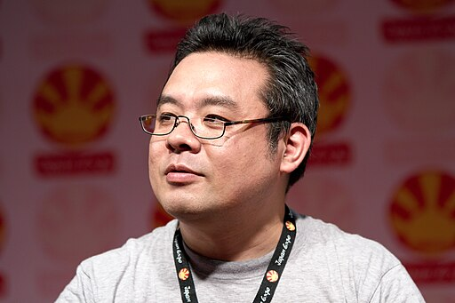
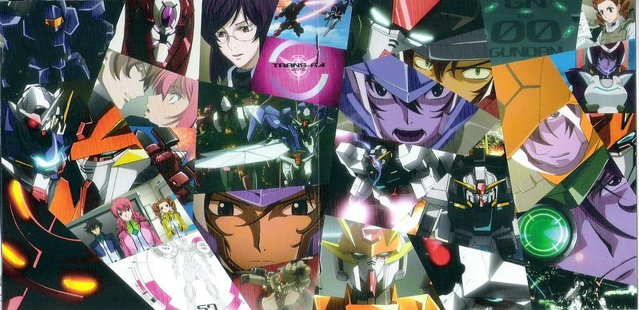
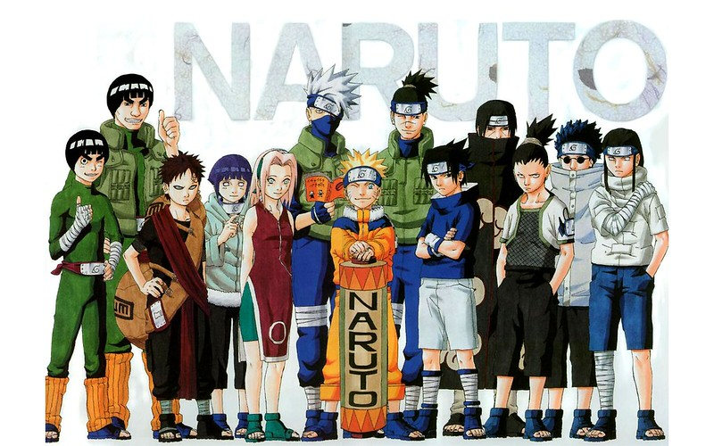

Georges Seguin (Okki), CC BY-SA 3.0 https://creativecommons.org/licenses/by-sa/3.0, via
Wikimedia Commons
Yasuhiro Nightow is the main character designer for the Gungrave anime and video game
series. He is a Japanese manga artist best known for creating Trigun,
a series that blends sci-fi, western elements, and philosophical themes through the story of Vash the
Stampede, a pacifist gunman with a violent reputation. His dynamic art style and mix of action, humor,
and emotional depth helped the series gain worldwide acclaim, especially after its anime adaptation.
His work is celebrated for combining stylish action with profound
storytelling, leaving a lasting mark on manga, anime, and pop culture.

"Mobile Suit Gundam 00 OST 3" by CLF is licensed under CC BY-NC-ND 2.0. To view a copy of
this license, visit https://creativecommons.org/licenses/by-nc-nd/2.0/?ref=openverse.
Yōsuke Kuroda is the main screen writer for the Gungrave anime. He is renowned for his
extensive work across a wide range of genres, from action and science fiction to romance and comedy. He
is best known as the series
composer and scriptwriter for acclaimed titles such as Mobile Suit Gundam 00, My Hero Academia, Trigun,
and Hellsing Ultimate, where his sharp dialogue, strong pacing, and ability to balance character-driven
drama with large-scale storytelling shine through. Kuroda has also worked on popular series like Excel
Saga, Honey and Clover, and Please Teacher!, showcasing his versatility in both intense narratives and
lighthearted, character-focused stories. With a career spanning decades, his writing has been central to
shaping many beloved anime, making him one of the industry’s most prolific and respected storytellers.

"naruto wallpaper" by bwana is licensed under CC BY-NC-SA 2.0. To view a copy of this
license, visit https://creativecommons.org/licenses/by-nc-sa/2.0/?ref=openverse.
Toshiyuki Tsuru is the Gungrave series director. He is a best known for his work
on
long-running and widely popular series such as Naruto and Naruto Shippuden. He directed several of the
franchise’s most memorable episodes and films, including Naruto Shippuden the Movie: The Will of Fire,
showcasing his talent for blending emotional storytelling with dynamic, large-scale action sequences.
Beyond Naruto, Tsuru has contributed as a director and storyboard artist to other notable projects,
including Bleach, demonstrating versatility across action, drama, and
character-driven narratives. His direction is praised for its cinematic style, strong pacing, and
ability to elevate emotional moments, making him a respected figure in the anime industry.